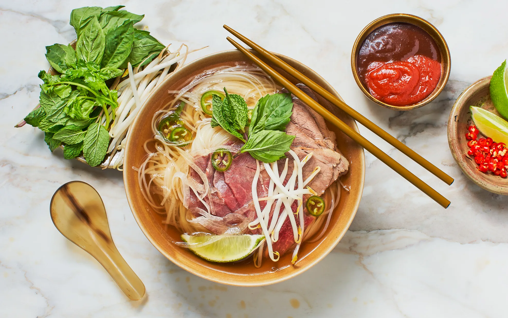

How to Make PHO

Below is the recipe for making Pho.
Making pho is not an easy task, let alone a short task. It takes time and effort to make the perfect broth.
You need alot of spices, cardamin, onions, ginger, etc, along with ox tail for maximum beef flavoring.
Ingredients
- 3 x star anise pods
- 1 x 3" cinnamon stick
- 4 x whole cloves
- 2 x Tbsp. vegetable oil, plus more for noodles
Follow the steps below to learn how to make pho.
- Set a 6-qt. Instant Pot to high sauté. Toast star anise, cinnamon stick, and cloves, stirring, until fragrant and crackling slightly, about 2 minutes. Add 2 Tbsp. oil and work around to coat bottom of pot. Reduce heat to medium, add onions, cut sides down, and ginger, and cook, undisturbed, until deep brown in spots, 5–7 minutes.
- Pour in 1 cup water, scraping up any browned bits with a wooden spoon, then add beef bones, brisket, fish sauce, sugar, 2½ tsp. Diamond Crystal or 1¼ tsp. Morton kosher salt, and another 6 cups water (or just up to your max fill line). Lock lid and turn venting knob to sealing position. Cook on high pressure 1 hour (it will take about 20 minutes to come to pressure before the cook time begins). Naturally release pressure 30 minutes.
- While the broth is cooking, place noodles in a large bowl and pour in cold water to cover. Let soak 30 minutes. Drain noodles and rinse to remove excess starch.
- Freeze beef eye of round until firm, 20–30 minutes. Thinly slice against the grain, then chill in refrigerator until ready to serve.
- Once pressure on pot has released 30 minutes, place a kitchen towel loosely over vent to prevent splattering. Using a wooden spoon, gradually open venting knob. As soon as floating pin drops, carefully open lid. Using tongs, transfer bones to a large bowl.
- Place brisket in another large bowl and pour cool water over to cool down and keep from drying out. Using a fine-mesh sieve, scoop out solids from broth; discard aromatics and reserve any meat and bones for serving if desired. (Leftover meat and bones can also be reserved for another use; add to fried rice or bibimbap or scoop out marrow and slather it over slices of grilled toast.) Skim fat from surface with a ladle and discard. Taste broth and season with more fish sauce or salt if needed. Set to low sauté and simmer gently while you cook the noodles.
- Fill a large pot one third of the way with water and bring to a rolling boil. Add noodles and cook, using chopsticks or a wooden spoon to stir, until just al dente, about 15 seconds. Drain noodles in a colander and rinse well under cold water to stop cooking. Drizzle a little oil over and toss to coat (this will keep them from sticking together).
- Remove brisket from water and thinly against the grain. Divide noodles among deep bowls. (Pro tip: Before adding noodles, swirl hot water inside bowls to warm up, then discard.) Top each bowl with a few slices of brisket, sliced beef eye of round, and any reserved meat and bones (if using) and top with sliced onion, scallions, and cilantro (if using); season with pepper. Ladle hot broth over raw beef to cook.
- Arrange Thai basil leaves, mint leaves, mung bean sprouts, chiles, and lime wedges on a platter for topping pho as desired and serve with Sriracha and hoisin sauce in small bowls for dipping.